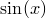

plot [<range specifier> ...] ('<filename>'|<function>)
[using <using specifier>] [axes <axis specifier>]
[select <select specifier>]
[index <index specifier>]
[every <every specifier>]
[with <style> [<style modifier> ... ] ]
The plot command is the main workhorse command of Pyxplot, which is used to produce all plots. For example to plot the sine function:
plot sin(x)
Ranges for the axes of a graph can be specified by placing them in square brackets before the name of the function to be plotted. An example of this syntax would be:
plot [-pi:pi] sin(x)
which would plot the function  between and .
Data files may also be plotted as well as functions, in which case the filename of the data file to be plotted should be enclosed in apostrophes. An example of this syntax would be:
plot 'data.dat' with points
which would plot the file called data.dat. Section 2.6 should be studied for further details of the format that is expected of input data files, and how Pyxplot may be directed to plot only certain portions of data files.
Multiple datasets can be plotted on a single graph by listing them with commas separating them:
plot sin(x) with colour blue, cos(x) with linetype 2